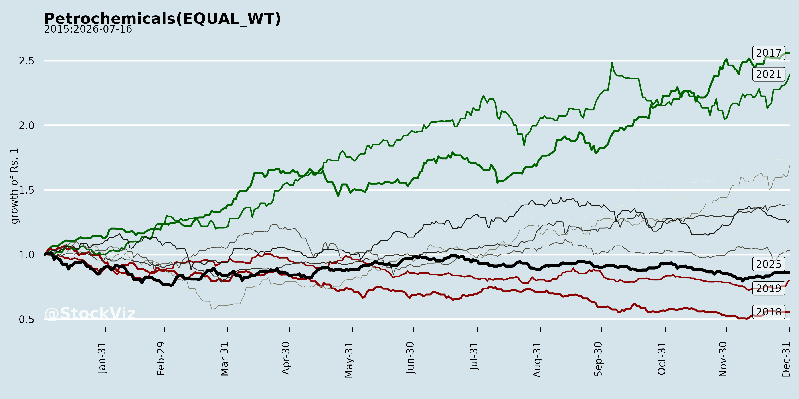
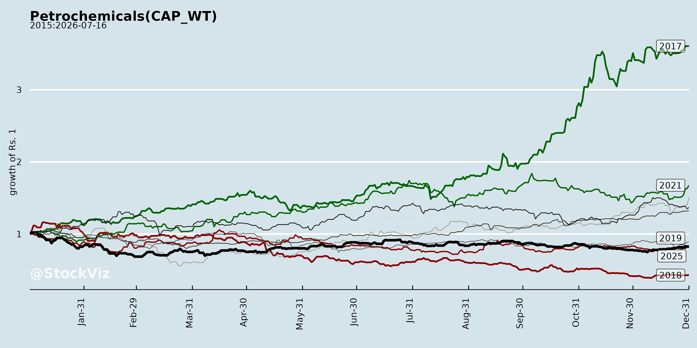
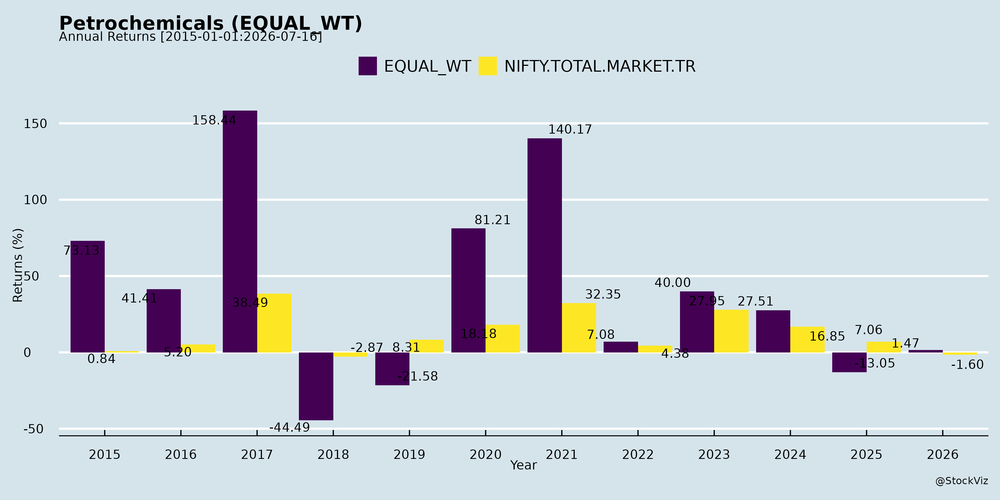
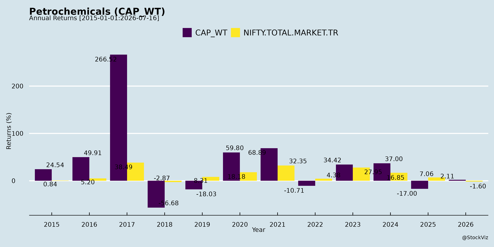
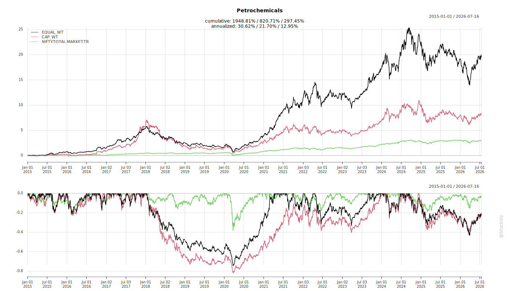
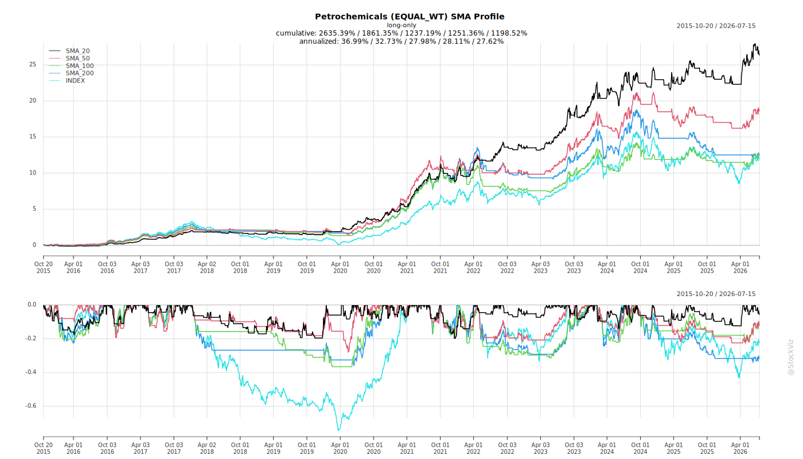
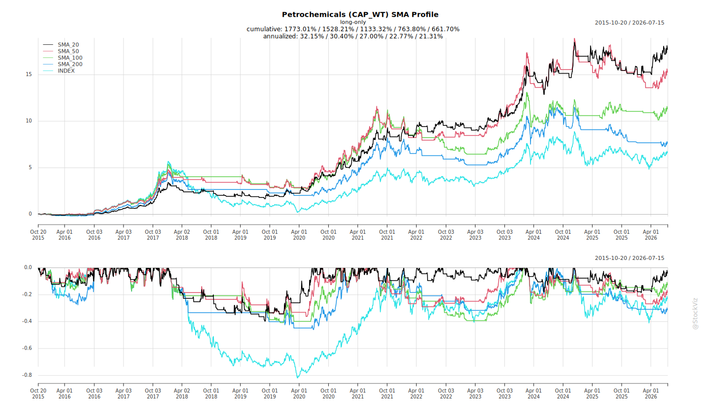
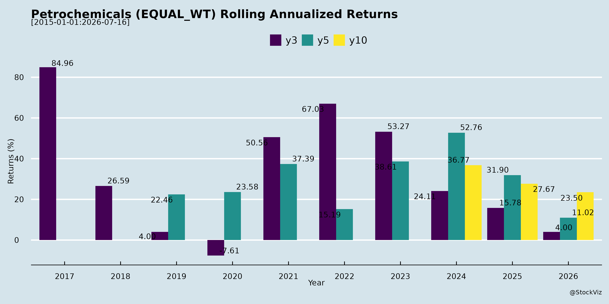
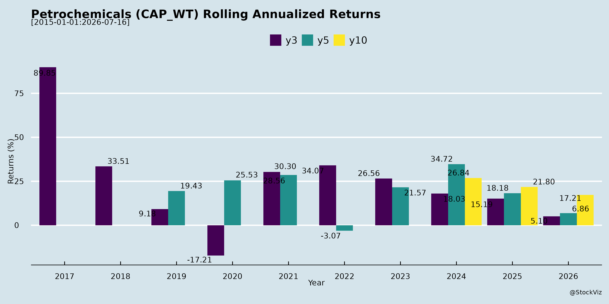

asof: 2026-04-15
Agarwal Industrial Corporation Limited (AICL) has experienced a highly volatile environment marked by severe external headwinds, which are progressively transitioning into long-term infrastructural opportunities. * The Challenges: AICL’s performance was significantly impacted by geopolitical disruptions and adverse weather. An India-Pakistan conflict disrupted trade flows and shipping schedules, causing an estimated 15-day operational loss [1, 2]. Furthermore, heightened tensions across the USA, Iran, Israel, and the wider Middle East disrupted regional trade, particularly affecting the UAE, resulting in nearly a month of shipping movement impacts and underutilized vessels [1-3]. Concurrently, an early onset of the monsoon season severely slowed road construction activities across India, creating a softer demand for bitumen and a volume shortfall of 50,000 MT in the first quarter of FY26 [1, 4, 5]. * The Opportunities: The management views these supply-side constraints as cyclical rather than structural [6, 7]. The overarching opportunity lies in India’s road infrastructure sector, fueled by government targets to award Rs. 7 lakh crores in projects by FY26, and scaling up to Rs. 10 lakh crores annually thereafter [2, 4]. Programs like Bharat Mala and PM Gati Shakti provide sustained demand visibility for bitumen [4, 8]. To capitalize on this, AICL acquired Konkan Storage Systems Private Limited in Karwar to strengthen its logistics and storage capabilities, is developing a new terminal in Mangalore, and recently secured a major Rs. 218.59 crore tender from Bharat Petroleum Corporation Limited (BPCL) to supply 42,800 MT of Bulk Bitumen [9-12].
DCW Limited is actively evolving its business model to mitigate commodity market volatility by pivoting toward high-margin products and sustainable operations. * The Challenges: DCW has had to actively manage operational efficiencies to counter external market headwinds that historically led to losses in its Basic Chemicals segment [13, 14]. The company also continues to navigate legacy legal and regulatory demands, including a Rs. 5,491.45 lakh electricity tax dispute, customs demands, and a state government repossession notice regarding its Sahupuram leased land [15, 16]. * The Opportunities: The company’s core evolutionary strategy, “Transitioning with Purpose,” relies on establishing Specialty Chemicals as its primary growth engine [14, 17]. DCW is expanding its Chlorinated Poly Vinyl Chloride (CPVC) capacity from 20 kilotonnes to 50 kilotonnes to replace imports and meet domestic demand [17]. Furthermore, the company commissioned a 44.5 MW solar power facility, which will fulfill approximately 25% of its Sahupuram site’s energy requirements, embedding sustainability and cost leadership into its structure [18, 19].
Swan Corp Limited (Formerly Swan Energy) has undergone a major corporate evolution to seize emerging industrial opportunities. * The Evolution & Opportunities: Moving away from its century-old origins in textiles, the company officially rebranded to Swan Corp to reflect its transformation into a diversified industrial conglomerate focused on manufacturing, defense, energy, and real estate [20]. Capitalizing on new sectors, Swan Corp established a Special Purpose Vehicle (SPV) named Swan Balu Heavy Industries Private Limited to explicitly target supply opportunities within the global defense, aerospace, railways, and nuclear industries [21-23].
Manali Petrochemicals Limited (MPL) has balanced macroeconomic uncertainties and operational setbacks with targeted capacity expansions. * The Challenges: MPL had to absorb the financial impact of Cyclone Michaung, which caused material damage and necessitated plant restoration efforts resulting in an exceptional item expense and Rs. 1,226 lakhs carried as an insurance receivable [24, 25]. Additionally, the company is dealing with an Industrial Tribunal award directing it to pay Rs. 1.11 crore over a wage dispute with 12 workmen [26]. * The Opportunities: Despite these hurdles, MPL successfully completed expansion activities at its Heavy Chemicals Division (HCD) plant, increasing its Caustic Soda production capacity to 250 TPD [27, 28]. The company has also maintained consistent margins through strong portfolio optimization and the performance of its international subsidiaries [29].
Pasupati Acrylon Limited has faced direct supply chain shocks but is actively diversifying its revenue streams. * The Challenges: The company was forced to temporarily shut down its Acrylic Fiber Plant due to raw material shipment delays caused by the ongoing war in the Middle East [30]. * The Opportunities: Operations at the Acrylic Fiber Plant have since resumed [31]. Evolving its business model, the company successfully set up a 150 KL per day Grain-based Distillery for Ethanol blended petrol, creating an entirely new operational segment [32].
Supreme Petrochem Ltd has navigated equipment failures while integrating new acquisitions. * The Challenges: After successfully commissioning the first line of its ABS project (70,000 TPA capacity) in September 2025, operations had to be suspended in December 2025 due to the malfunctioning of critical production equipment [33]. The company is currently working with engineering consultants to restore operations [33]. Additionally, the introduction of new Labour Codes required the company to account for significant incremental liabilities relating to gratuity and leave encashment [34, 35]. * The Opportunities: The company expanded its group footprint by acquiring control of Xmold Polymers Private Limited, integrating it as a subsidiary [36].
Rain Industries Limited, through its subsidiary Rain Carbon Canada Inc., is tackling supply chain vulnerabilities in the green energy sector. * The Challenges: A critical gap exists in the North American domestic supply chain for EV battery materials, as over 90% of all battery-grade graphite is currently sourced from China [37]. * The Opportunities: Rain Carbon collaborated with Green Graphite Technologies to successfully complete a project producing coated spherical purified graphite (CSPG) [37, 38]. Backed by a CA$682,000 grant from the Ontario government, this enables a highly sustainable, cost-competitive domestic supply of battery-grade graphite, paving the way for a demonstration plant and future commercial operations [37, 39].
asof: 2026-04-15
The petrochemical, chemical, and allied manufacturing industries are currently navigating a complex environment characterized by multiple significant headwinds. These challenges span geopolitical, environmental, economic, operational, and regulatory spheres:
Geopolitical Tensions and Supply Chain Disruptions * Regional Conflicts: Heightened geopolitical tensions involving the USA, Iran, and Israel have severely disrupted trade in the UAE and the broader Middle East, causing up to a month of delays in shipping movements [1-3]. Furthermore, an India-Pakistan war has disrupted trade flows and shipping schedules, resulting in an estimated 15 days of operational impact for some logistics networks [1, 2, 4]. * Raw Material Shortages: The ongoing war in the Middle East has caused delays in the shipment of raw materials, which has even forced temporary shutdowns of manufacturing facilities, such as acrylic fiber plants [5]. * Global Supply Tightness: Global geopolitical volatility has broadly resulted in supply-side tightness, shipment timing mismatches, extended voyage-cycle adjustments, and short-term supply constraints in key source markets [6, 7].
Severe Weather and Natural Disasters * Monsoon Impacts: An early onset of the monsoon season has slowed down infrastructure and construction activities, leading to softer demand and lower sales volumes for construction-dependent materials like bitumen [1, 2, 8]. * Cyclones and Flooding: Natural disasters, specifically Cyclone Michaung, have caused significant operational disruptions. Companies have suffered material damage, loss of inventories, and damage to property, plant, and equipment, requiring costly plant restoration activities and reliance on insurance claims to mitigate losses [9-12].
Macro-economic Volatility and Market Pressures * Economic Uncertainty: The industry is operating under persisting global headwinds and macro-economic uncertainty, which requires a disciplined approach to cost management and material optimization [13-15]. * Intense Competition: Companies are facing a highly competitive environment that strains market share and requires portfolio optimization to sustain profit margins [16].
Operational and Logistical Constraints * Vessel Underutilization: Due to the aforementioned geopolitical disruptions, shipping fleets have experienced periods of underutilization. Because fixed costs (like wages and crew expenses) remain the same even when vessels are not moving optimally, this has directly depressed EBITDA margins [3, 17-19]. Furthermore, routine dry docking and maintenance take vessels out of operation, further impacting logistical capacity [20, 21]. * Equipment Failures: Unexpected operational hurdles, such as the malfunctioning of critical production equipment, have forced companies to temporarily suspend plant operations while awaiting repairs from engineering consultants and equipment suppliers [22].
Regulatory, Legal, and Labor Challenges * Tax and Customs Demands: Companies are fighting costly legal battles against authorities over substantial financial demands. These include massive electricity tax demands on captive power generation, demands for differential customs duties with added interest and penalties on past coal imports, and income tax orders that significantly reduce available Minimum Alternate Tax (MAT) credits [23-27]. * Land and Lease Disputes: Some manufacturers are facing re-possession notices and lease rent demands from state governments regarding the land on which their facilities operate, leading to ongoing litigation to prevent eviction [28, 29]. * Increased Labor Liabilities: The Government of India’s notification of four New Labour Codes (consolidating 29 existing labor laws) has resulted in new incremental financial liabilities for companies, specifically increasing costs related to gratuity and leave encashment due to changes in the definition of “wages” [12, 30, 31]. Additionally, companies have had to deal with historical wage disputes resulting in Industrial Tribunal awards that direct the payment of heavy compensation to workmen [32].
asof: 2026-04-15
The industrial, chemical, and infrastructure-materials sectors are highly dynamic, requiring companies to navigate global vulnerabilities while capitalizing on domestic growth and technological advancements. Based on the operational updates and strategic shifts of the companies operating in this space, here are the key things to understand about the industry:
1. High Sensitivity to Geopolitical and Macro-Economic Factors The industry is profoundly impacted by global supply-side dynamics and geopolitical volatility [1, 2]. Geopolitical tensions across regions—such as conflicts involving India and Pakistan, the USA, Iran, Israel, and the broader Middle East—frequently disrupt international trade flows and shipping schedules [3-5]. For example, such tensions can delay raw material shipments, causing manufacturing plants to temporarily shut down [6], and result in extended voyage-cycle adjustments [7]. When shipping vessels are underutilized due to these disruptions, companies still bear fixed costs like wages and crew expenses, which directly strains EBITDA margins and overall revenue [8-10]. Additionally, natural seasonal factors, such as the early onset of monsoons, can significantly slow down construction activities, leading to softer demand for infrastructure raw materials [4, 5].
2. Government Infrastructure Initiatives act as a Massive Growth Engine Despite external global headwinds, the domestic demand environment remains incredibly robust due to aggressive government infrastructure targets [4]. Programs such as Bharatmala and PM Gati Shakti are pivotal growth drivers, supported by ambitious targets like constructing 100 kilometers of road per day [11, 12]. To sustain this, the government has projected project awards worth ₹7 lakh crore by FY26, which is expected to scale up to ₹10 lakh crore annually thereafter [11, 12]. This massive scale of infrastructure development provides sustained visibility and long-term demand for crucial raw materials like bitumen, allowing suppliers to confidently plan capacity expansions [11, 12].
3. Strategic Transition Toward High-Margin Specialty Chemicals To build structural resilience and insulate themselves from the volatility of basic commodities, chemical manufacturers are actively transitioning their portfolios toward high-margin specialty chemicals [13, 14]. Companies are purposefully dividing their operations to focus on specialized verticals—such as Chlorinated Poly Vinyl Chloride (CPVC) and Synthetic Iron Oxide Pigment (SIOP)—which serve as dedicated growth engines [15, 16]. Expanding capacity in these value-added specialty products is a direct strategy to replace expensive imports, capture robust domestic demand, and structurally enhance the quality and profitability of their earnings base [14, 16].
4. The Importance of End-to-End Supply Chain Integration In an industry plagued by supply constraints, maintaining an integrated operational platform is a critical competitive differentiator [17, 18]. Companies that control their entire supply chain—spanning import-led sourcing, port-based bulk storage, manufacturing, and nationwide last-mile delivery—are much better positioned to handle external shocks [11, 18, 19]. By owning dedicated shipping fleets, hundreds of logistics tankers, and acquiring strategic port storage facilities, businesses can optimize their turnaround times, ensure consistent deliveries to massive clients (like Public Sector Undertakings), and save significantly on rental and operational expenses [19-22].
5. Diversification into Future-Ready and Sustainable Technologies Legacy industrial and textile conglomerates are rebranding and pivoting into complex, high-impact sectors critical to national development, such as defence, aerospace, nuclear energy, and offshore fabrication [23-25]. Furthermore, sustainability and green energy are becoming central to industry innovation. There is a major push to onshore the supply chain for electric vehicle (EV) batteries by developing battery-grade materials with lower carbon footprints. For instance, companies are investing in patented purification technologies to produce coated spherical purified graphite (CSPG) for lithium-ion batteries—aiming to reduce operating costs by 55% and lower the carbon footprint by 82% compared to traditional overseas methods [26-28]. Cost leadership is also being achieved through the integration of green energy, such as the commissioning of large-scale captive solar power facilities to run manufacturing operations [29].
asof: 2026-04-15
The provided sources highlight significant tailwinds across three distinct industries: Road Infrastructure and Bitumen, Specialty Chemicals, and Electric Vehicle (EV) Battery Materials.
Here is a detailed breakdown of the positive growth drivers and tailwinds affecting each of these sectors:
1. Road Infrastructure and Bitumen Industry
The bitumen and allied products industry is experiencing strong tailwinds driven primarily by massive government push and sustained infrastructure development in India: * Ambitious Government Targets and Funding: India’s road infrastructure sector remains a highly potent growth driver due to ambitious government targets [1-3]. The government is expected to award projects worth ₹7 lakh crores by FY26, with plans to scale this up to ₹10 lakh crores annually in the years following [1, 2, 4]. * Key National Infrastructure Programs: Major government initiatives, specifically the Bharatmala and PM Gati Shakti programs, are acting as primary catalysts to drive infrastructure growth [1, 2, 4]. * Aggressive Construction Goals: The scale and urgency of these developments are underscored by the government’s target to construct more than 100 kilometers of road per day [1, 2, 4]. * Sustainable Demand Visibility: Because infrastructure activity remains steady and project execution is continuing consistently across various regions, there is no structural decline in domestic bitumen demand [5]. These large-scale government initiatives provide strong visibility and create a sustainable, long-term demand for bitumen, which is a crucial raw material for road construction projects [1, 2, 4].
2. Specialty Chemicals Industry
The specialty chemicals manufacturing sector is benefiting from a combination of domestic demand and strategic cost-saving transitions: * Import Substitution and Domestic Demand: There is robust domestic demand for specialty chemicals like Chlorinated Poly Vinyl Chloride (CPVC) [6]. Companies are successfully expanding their capacities specifically to capitalize on this demand and to replace imported CPVC materials in the domestic market [6]. * Alternate Energy-Substitution Gains: The industry is benefiting from transitioning toward green energy to fulfill large-scale manufacturing energy requirements [7]. For instance, commissioning captive solar power facilities is helping companies achieve structural cost leadership, mitigate risks, and secure long-term energy cost stability [8, 9].
3. Electric Vehicle (EV) Battery Materials Industry
The market for critical battery materials, particularly high-purity graphite for lithium-ion batteries, is experiencing massive tailwinds due to the localization of supply chains and environmental goals: * Onshoring and Domestic Supply Chain Push: Currently, over 90% of all battery-grade graphite is sourced from China [10]. However, there is a critical push to close this domestic supply gap. North American automobile Original Equipment Manufacturers (OEMs) and battery cell manufacturers are actively seeking a secure, localized supply of battery-grade graphite [10]. * Demand for Lower Carbon Footprints: Along with domestic security, buyers are demanding materials that come with a significantly lower carbon footprint compared to traditional methods, but at a similar, cost-effective price point [10]. Technologies that can sustainably purify graphite are perfectly positioned to meet this demand [10]. * Strong Government Support: The industry is receiving substantial financial and structural support from government entities aiming to build advanced EV and battery supply chains [10]. Investments from groups like the Ontario Vehicle Innovation Network are accelerating the development of domestic critical materials and reducing reliance on global imports [10].
asof: 2026-04-15
The provided sources cover several distinct industries—primarily road infrastructure/bitumen, chemicals and petrochemicals, and diversified industrial sectors. The general outlook varies by sector but is largely driven by domestic growth initiatives and strategic cost management amidst global volatility.
Road Infrastructure and Bitumen Industry The outlook for India’s road infrastructure and the associated bitumen industry is highly positive and is considered a strong growth driver for the country [1]. * Government Initiatives and Targets: The Indian government has set ambitious targets, with project awards expected to reach Rs. 7 lakh crores by FY26 and subsequently scale up to Rs. 10 lakh crores annually [1, 2]. * Key Growth Programs: Major national programs such as Bharat Mala and PM Gati Shakti are expected to heavily drive this growth [1, 2]. The government is targeting the construction of more than 100 kilometers of road per day, highlighting the massive scale and urgency of infrastructure development [1, 3]. * Bitumen Demand: These infrastructure initiatives offer strong, sustainable, and long-term visibility for bitumen demand, firmly positioning it as a crucial raw material [1, 3]. While overall bitumen demand growth is estimated at a 4% to 6% Compound Annual Growth Rate (CAGR) [4], there is no fundamental problem with product demand [5]. Although short-term disruptions—such as the early onset of monsoons and regional geopolitical tensions affecting shipping—temporarily impacted imports and construction activities, the underlying consumption drivers remain completely intact [1, 6-8].
Chemicals and Petrochemicals Industry The general outlook for the chemical and petrochemical manufacturing sector is cautiously optimistic, balancing macroeconomic uncertainties with strategic operational shifts. * Managing Global Headwinds: Companies in this sector acknowledge ongoing global volatility, macro-economic uncertainty, and external headwinds [9-11]. To navigate this, the industry is heavily focused on disciplined cost management, material optimization, and maintaining operational stability [10-12]. * Shift to Specialty Chemicals: A major strategic transition is underway toward high-margin, value-added Specialty Chemicals [12, 13]. Manufacturers are expanding capacities in specialized products (like Chlorinated Poly Vinyl Chloride, or CPVC) to replace imports and capitalize on robust domestic demand [13]. * Future Tailwinds: Moving forward, the industry expects stronger tailwinds, particularly as new capacity volumes from specialty projects begin to come online [14]. There is also an anticipation of potential improvements in overall commodity market pricing [14]. Furthermore, there is a distinct push toward sustainability and green energy integration (such as large-scale solar power facilities) to establish structural cost leadership and long-term energy cost stability [15, 16].
Diversified Industrials, Energy, and Defence For diversified industrial conglomerates, there is a strategic pivot toward high-growth and complex sectors [17, 18]. * Companies are expanding their footprint beyond traditional sectors into oil and gas, commercial and defence shipbuilding, heavy engineering, and energy [19]. * The primary outlook and mission for these conglomerates is to build resilient, sustainable, and self-reliant businesses that directly support and scale with India’s national economic development goals [18, 20].
Copyright © 2023 SAS Data Analytics Pvt. Ltd. All rights reserved.